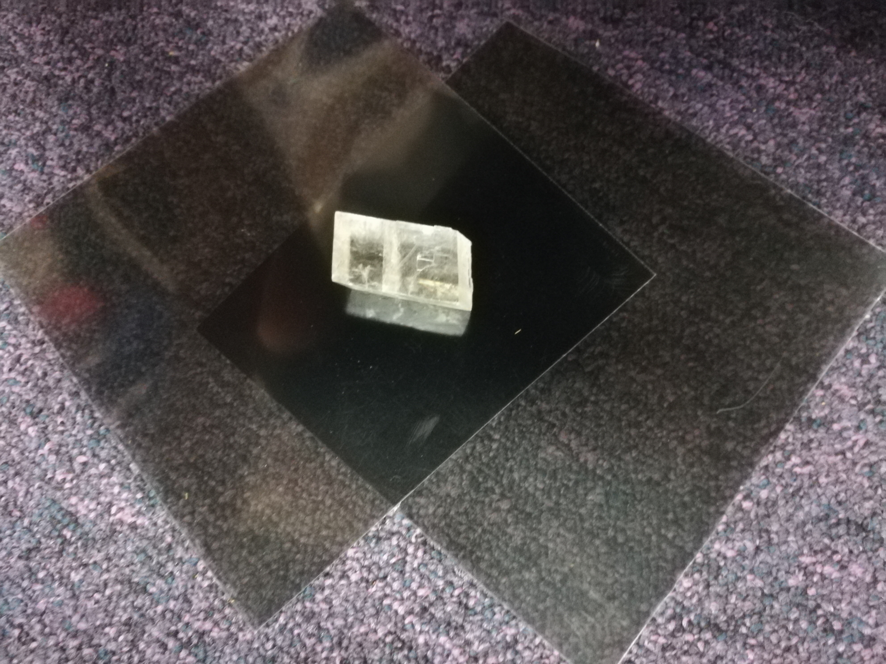

This contains materials, discussion points and simple tasks to cover topics relating to polarisation of light and birefringent materials. To begin, polarising sheets are used to demonstrate the concept of blocking orthogonal polarisations; this is then later combined with a calcite crystal. The coloured contours seen in the crystal through the polarisation filters demonstrate the crystals birefringent properties.